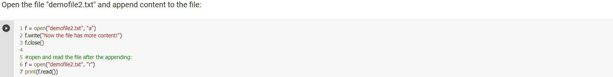
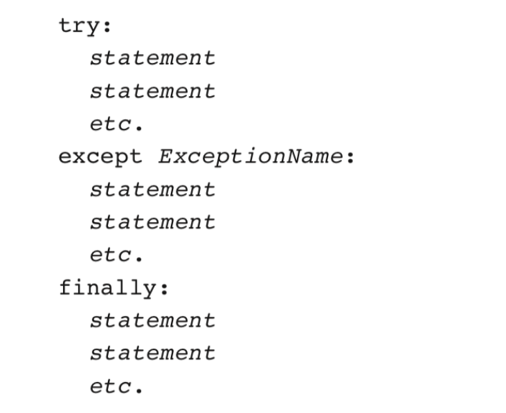

Files and Exceptions
Introduction
File input/output
- For program to retain data between the times it is run, you must save the data
- Data is saved to a file, typically on computer disk
- Saved data can be retrieved and used at a later time
- "Writing data to":saving data on a file
- Output file: a file that data is written to
- "Reading data from" : process of retrieving data from a file
- Input file: a file from which data is read
In general, two types of files
- Text file: contains data that has been encoded as text
- Binary: contains data that has not been converted to text
- Sequential access: file read sequentially from beginning to end, can't skip ahead
- Direct access: can jump directly to any piece of data in the file
There are always three steps that must be taken when a file is used by a program.
- Open the file - Opening a file creates a connection between the file and the program. Opening an output file usually creates the file on the disk and allows the program to write data to it. Opening an input file allows the program to read data from the file.
- Process the file - In this step data is either written to the file (if it is an output file) or read from the file (if it is an input file).
- Close the file - When the program is finished using the file, the file must be closed. Closing a file disconnects the file from the program.
Python File Open
File handling is an important part of any web application.
Python has several functions for creating, reading, updating, and deleting files.
The key function for working with files in Python is the open() function.
The open() function takes two parameters; filename, and mode.
There are four different methods (modes) for opening a file:
"r" - Read - Default value. Opens a file for reading, error if the file does not exist
"a" - Append - Opens a file for appending, creates the file if it does not exist
"w" - Write - Opens a file for writing, creates the file if it does not exist
"x" - Create - Creates the specified file, returns an error if the file exists
"t" - Text - Default value. Text mode
"b" - Binary - Binary mode (e.g. images)
Syntax
To open a file for reading it is enough to specify the name of the file:
Because "r" for read, and "t" for text are the default values, you do not need to specify them.
Python Read Files
Open a file on the Server
Assume we have the following file, located in the same folder as Python:
To open the file, use the built-in open() function.
The open() function returns a file object, which has a read() method for reading the content of the file.
Read Only Parts of the file
By default the read() method returns the whole text, but you can also specify how many characters you want to return:
Read Lines
You can return one line by using the readline() method:
By looping through the lines of the file, you can read the whole file, line by line:

Close Files
It is a good practive to always close the file when you are done with it.
Python File Write
Write to an Existing File
To write to an existing file, you must add a parameter to the open() function:
"a" - Append - will append to the end of the file
"w" - Write - will overwrite any existing content

To create a new file in Python, use the open() method, with one of the following parameters:
"x" - Create - will create a file, returns an error if the file exist
"a" - Append - will create a file if the specified file does not exist
"w" - Write - will create a file if the specified file does not exist
Result: a new empty file is created!
Python Delete File
Delete a File
To delete a file, you must import the OS module, and run its os.remove() function:
Check if File exits:
To avoid getting an error, you might want to check if the file exists before you try to delete it:
Delete Folder
To delete an entire folder, use the os.rmdir() method:
- Exception: error that occurs While a program is running
- usually cause program to abruptly halt
- Traceback: error message that gives information regarding line numbers that caused the exception
- Indicates the type of exception and brief description of the error that caused exception to be raised
- Exception handler: code that responds when exceptions are raised and prevent program from crashing
- In Python, written as try/except statement
General format: try: statements except exceptionName: statements - Try suite: statements that can potentially raise an exception
- Handler: statements contained in except block
- Many exceptions can be prevented by careful coding
- Example: input validation
- Usually involve a simple decision construct
- Some exceptions cannot be avoided by careful coding
- Examples
- Trying to convert non-numeric string to an integer
- Trying to open for reading a file that doesn't exit
- If statement in try suites raise exception:
- Exception specified in exception clause:
- Handler immediately following exception clause executes
- Continue program after try/except statament
- Other exceptions
- Program halts with traceback error message
- Often code in try suite can throw more than one type of exception
- Need to write except clause for each type of exception that needs to be handled
- An except clause that does not list a specific exception will handle any exception that is raised in the try suite
- Should always be last in a series of except clauses
Displaying an Exception's Default Error Message
- Exception object: object created in memory when an exception is thrown
- Usually contains default error message pertaining to the exception
- Can assign the exception object to a variable in an except clause
- Example: except ValueError as err:
- Can pass exception object variable to print function to display the default error message
- try/except statement may include an optional else clause, which appears after all the except clauses
- Aligned with try and except clauses
- Syntax similar to else clause in decision structure
- Else suite: block of statements executed after statements in try suite, only if no exceptions were raised
- If exception was raised, the else suite is skipped
- try/except statement may include an optional finally clause, which appears after all the except clauses
- Aligned with try and except clauses
- General format:
finally: statements - Finally suite: block of statements after the finally clause
- Execute whether an exception occurs or not
- Purpose is to perform cleanup before exiting
